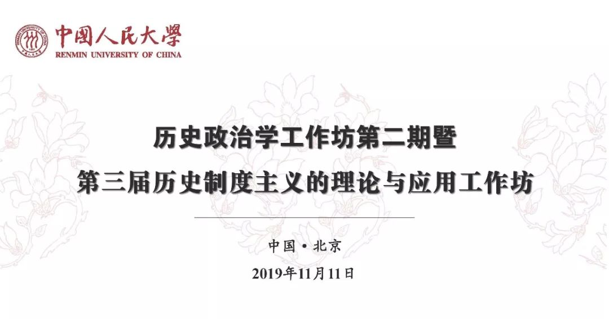

收录于合集
2019年11月11日，由中国人民大学历史政治学研究中心主办的历史政治学工作坊第二期暨历史制度主义的理论与应用工作坊于中国人民大学明德国际楼406会议室举行。来自吉林大学、上海交通大学、中央财经大学、中央民族大学、外交学院和中国人民大学的多位教师和博士生参与论文报告和评议，京内外高校的二十余名同学参与讨论。

工作坊第一节的主题是当代制度研究，中国人民大学国际关系学院青年教师、历史政治学研究中心秘书长黄晨博士主持发言。
外交学院国际关系研究所王思丹老师的发言主题是《中国气候治理的制度拼接》。该研究立足气候治理这一兼具学术价值与外交价值双重属性的热门议题，试图通过制度拼接理论来考察生态环境部与其它部门的冲突、制度如何制定、执行以及会遇到的挑战。作者首先强调制度的变化性，气候治理的主导单位发生了变化，需要关注如何整合既有的概念推出新的制度以及执行之前难以作为的制度。其次强调行为主体，需要关注各部门的互动结果以及对政策制定的影响。最后强调危机情境，国际压力和国内民众快速提升的环保要求考验着环保部门的能力。研究发现，经济发展和环境保护的张力依然存在；环境政策与能源结构存在冲突；政策执行受到当地政府的制约；气候变化的外交部分依然需要外交部的指导。
中国人民大学国际关系学院博士生何家丞同样关注制度间关系。他的发言主题是《制度匹配视角下供销合作社制度的产生与变迁》，研究问题聚焦于为什么供销合作社制度能够从计划经济时期延续到市场经济时期。目前新制度经济学的供给- 需求理论和路径依赖理论并未较好地挖掘供销合作社制度的变迁动力。他试图将既有的制度匹配理论进行扩展，关注其层次和时间维度，重视不同情境中制度协同演化和反馈的过程，进而解释供销合作社制度的起源与流变。
北京大学国际关系学院博士生施榕分享的主题是《中美洲的例外: 尼加拉瓜社区警务模式研究(1979-2019)》，她的核心关切在于：为什么经济发展落后的尼加拉瓜1979年以来的凶杀率明显低于中美洲北三角区国家？研究认为尼加拉瓜极低的凶杀率与其独特的社区警务模式有关。该模式生效有两个关键点：其一是1979年桑地诺革命的成功与桑解阵政权的确立，其二是1990年桑解阵在总统大选中的溃败。两个历史关节点形成了“全民动员”的社区警务模式，这一非预期性结果极大降低了该国的凶杀率。在此基础上，该研究同时指出了尼加拉瓜社区警务模式存在的深层问题，认为其前景不容乐观。
工作坊第二节的主题是比较历史分析，上海交通大学国际与公共事务学院黄宗昊老师主持发言。
基于制度微观结构的社会变革，中央财经大学政府管理学院刘庆乐副教授试图解释法、俄、中三国妇女选举权获得的不同历史进程。他认为制度的微观结构具有三个基础性要素：认知框架、行为规范、行动规则。在此基础上，制度变迁需要四个条件：变革的共享信念是制度变迁的开端，它既需要与现有制度相异，也需要演化为与制度微观结构同构的制度议程；友好的制度环境；共享信念的集体行动者能够突破现实制度的权力边界。
北京大学社会学系博士生董彦峰以《参远夷三疏》、《辩学疏稿》和《具揭》等重要文本为基础，考察了1616年前后天主教论辩中的话语与修辞。他关注天主教论辩中截然不同的论证方式，通过运用争议点理论和话语分析理论，认为沈㴶论证疑虑的主要修辞方式是“述古”或“颂圣”，徐光启、李之藻论证天主教合法性的修辞方式是“述古”，泰西儒士借助“用典”，而传教士则重视形式逻辑。这些差异反映了不同的本体论思维方式。
中国人民大学国际关系学院黄晨老师围绕传统中国政体的百年争论，对历史政治学进行了知识社会学梳理。作者首先区分了历史政治学的发展阶段及其方法论取向。其中第一代历史政治学者以封建论、皇权专制论和近世论为代表，他们强调宏大理论，但其方法论层面缺少对上层建筑及时间性的关注；第二代历史政治学者擅长概念和具体案例的细致研究，但是他们却面临着陷入案例特殊论和中国特殊论的风险。基于此，该研究最后提出了发展历史政治学的建设性的展望，即超越宏大理论与特殊概念，以中观因果机制作为复兴普遍理论的新视角。
随后，中国人民大学国际关系学院博士生杨端程和秦汉元以《军事竞争、精英联合与国家兴衰的分流——东魏-北齐与西魏- 北周的比较分析》为题汇报了古代中国的国家建构研究。该研究关注的是因内战而形成的东魏-北齐和西魏- 北周两国为何会出现兴衰上的分流。在“战争制造国家”理论的基础上，作者从中国历史上的准自然实验出发探索因果机制，讨论了在持续的战争压力下，政治精英群体行为对国家兴衰的决定性影响。对处于军事竞争压力下的中古国家而言，一旦统治者通过精英联合完成相对集权化的统合，并且能将社会精英吸纳进体制当中，便有能力开展改革，提升国家能力，形成正反馈，从而为战胜对手奠定组织基础。相反，如果国家内部的精英群体始终存在不可调和的矛盾，并且推行排他性改革，那么持续政争的结果必然导致国家败亡。
工作坊第三节的主题是理论与方法，中国人民大学国际关系学院马得勇老师主持发言。
吉林大学行政学院马雪松老师的发言主题是《观念、话语、修辞：政治科学中建构制度主义的三重取向》。研究认为，新制度主义政治学近期的发展受到社会学、语言学较多影响，在处理结构和能动关系问题与制度变迁的内生解释问题时更倾向以建构性而非结构性或因果性的动态视角思考相关理论命题和动力机制。这成为建构制度主义被确立为新制度主义第四个流派的契机。然而，建构制度主义内部包含各异的研究取向，虽然它们有意就共同关注的理论和现实议题开展对话，但是观念制度主义、话语制度主义、修辞制度主义的理论逻辑需要进一步区分。
上海交通大学国际与公共事务学院黄宗昊老师的发言题目是《历史制度主义的内涵：理想型与多样性》。他认为历史制度主义的具有四个特点：制度中心、权力观点、整体途径和过程意识。四个特点可以划分为制度和历史两个面向：制度中心和权力观点偏制度，是历史制度主义的微观基础；整体途径和过程意识偏历史，为历史制度主义增添宏观视野。在此基础上，研究非常精巧地以低中高三个层次比较了1990年代和2010年代历史制度主义文献四个维度的变化。在1990年代，制度和权力两个维度是高度发展的，整体途径发展程度低，过程意识处于中间水平。在2010年代，制度维度依然非常重要，权力观点重要性下降，整体途径意识升高，过程意识大幅增加。如果缺乏了其中某一维度，那么我们会发现历史制度主义的理论近亲：比较历史分析、社会学分析范式、渐进性制度变迁和间断均衡模式。
清华大学国际关系学系博士生张聪关注因果案例设计，他认为案例研究是一种遵循科学研究程序的实证研究方法。目前欧美政治学者对案例研究方法论的反思不断深化，案例研究在第三波定性方法浪潮中展现出强劲的发展势头，案例研究的科学性和严谨性得到显著提高，并且正逐渐迈向方法的融合和精致化。他提出了案例研究的五种逻辑，分别是单案例逻辑、实验逻辑、定量逻辑、组态逻辑以及因果机制逻辑。中国政治学研究者需要注重案例研究不同的分析策略、案例研究与定量方法的交叉融合，注重运用多元方法改进案例选择程序和方法，借鉴跨学科理论提高案例证据的评估和运用水平，在方法论自觉意识下增强通过案例研究检验和发展理论的生命力。
三节发言之后都分别设有评论和自由讨论环节，参会的师生对展示的论文以及衍生出的问题进行了热烈讨论。大家一致认为，历史政治学是发展中国政治学的一条新路，前景值得期待，但需要进一步澄清其理论和方法指向。历史政治学本身是包容的，它的发展也离不开一个开放的学术共同体来不断推动。
撰文：何家丞
审读：释启鹏
编辑：康张城